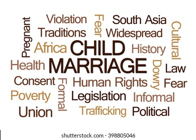

Child Marriage
Marriage before the age of 18 is a fundamental violation of human rights. Many factors interact to place a child at risk of marriage, including poverty, the perception that marriage will provide ‘protection’, family honor, social norms, customary or religious laws that condone the practice, an inadequate legislative framework and the state of a country’s civil registration system. While the practice is more common among girls than boys, it is a violation of rights regardless of marriage.